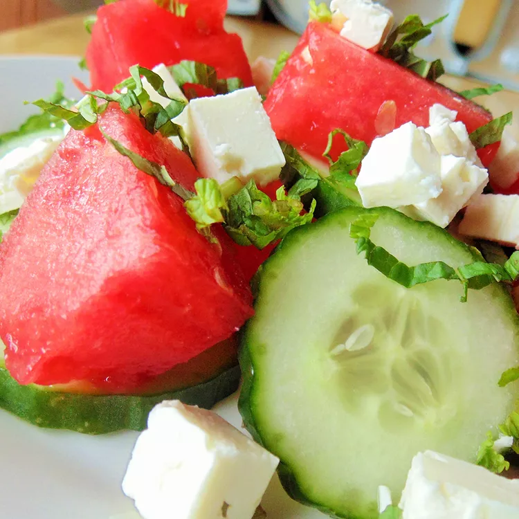

Watermelon Cucumber Salad

ingredients
- small red onion
- half-moons
- lime juice
- extra-virgin olive oil
- seedless watermelon
Steps for making Watermelon Cucumber Salad
- Cut the watermelon into bite-sized pieces.
This will make it easier to eat and will also help the watermelon absorb the dressing.
- Add the dressing right before serving.This salad is best when the watermelon is fresh and crisp.
If you dress it too early, the watermelon will start to get mushy.
- Use a good quality feta cheese.Feta is a key ingredient in this salad,
so you'll want to use a good quality cheese. I like to use goat's milk feta for its rich flavor.
- Gently cut the basil right before adding it to the salad.This will help it retain its flavor and color.
Description
This is a unique and refreshing salad for hot summer days. Watermelon is plentiful in summer and there are so many ways to enjoy it.
By using so many seasonal ingredients,you're sure to have a delicious salad that makes a great starter or side.